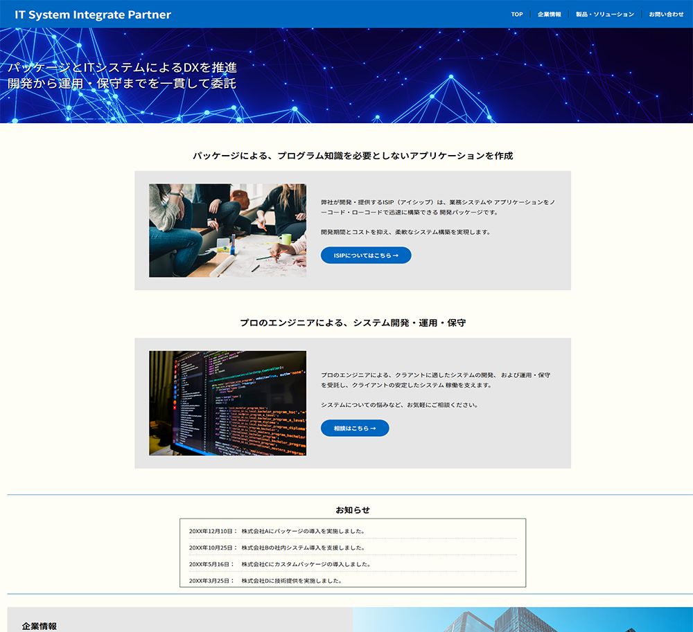

架空のシステムインテグレーター企業。訓練校でサイト制作実習の1作品目として作成。
PC対応(スマホ非対応)のサイトとして、「TOP」「企業情報」「お問い合わせ」ページを作成。
企業の設定は以下とする。
・ISIP(アイシップ)と呼ばれる、ローコード・ノーコードで業務アプリを作成できるパッケージを提供する。
・他にクライアントからシステム開発から運用保守までを一貫して請負い、業務に根付くIT活用を支援する。
URL
株式会社 IT System Integrate Partner
担当
デザイン・コーディング
サイトの目的
サービスの認知と新規クライアントの獲得
ターゲット
30代後半から50代中盤、企業内でのプロジェクトにおいて方針の決定権を持つ管理職
デザインについて
顧客の情報を取り扱うにあたり、誠実さを表す青と、落ち着いた雰囲気を表す白の色をベースにしてサイトを設計。 TOPページを上から下まで順に見たときに、企業としての事業と、提供しているパッケージを押し出すような導線を意識。
事業内容と強みがTOPページからわかり、その点についてサイト内を回遊してもらえるような構成を目的としている。
構成について
HTML・CSSにて構成。画像はフリー素材サイトから取得し、サイズ変更などの加工を実施。